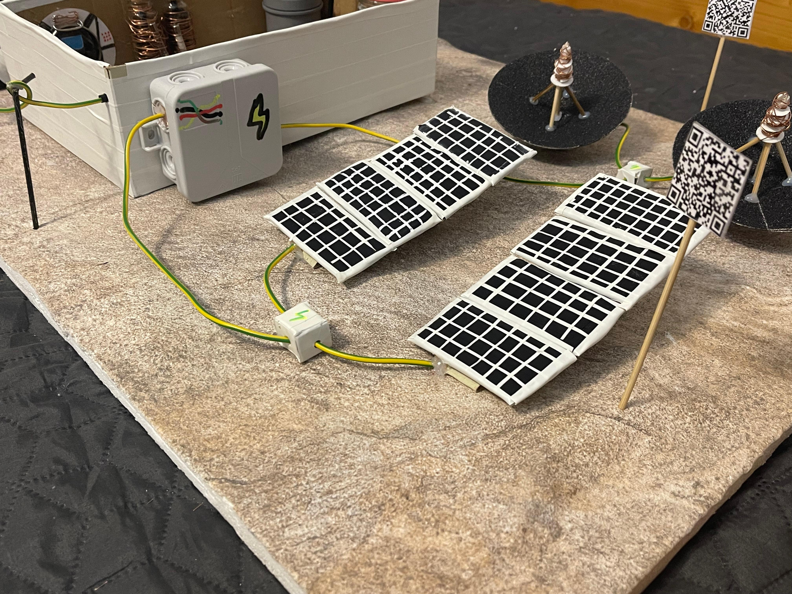

Panouri solare
Ansambluri montate la suprafață - sursă primară de energie

Rol și importanță
- Alimentează toate sistemele: ECLSS, comunicații, iluminat și echipamente științifice.
- Resursă regenerabilă și abundentă pe Marte (în perioadele cu lumină).
- Reduce dependența de combustibili transportați de la Pământ.